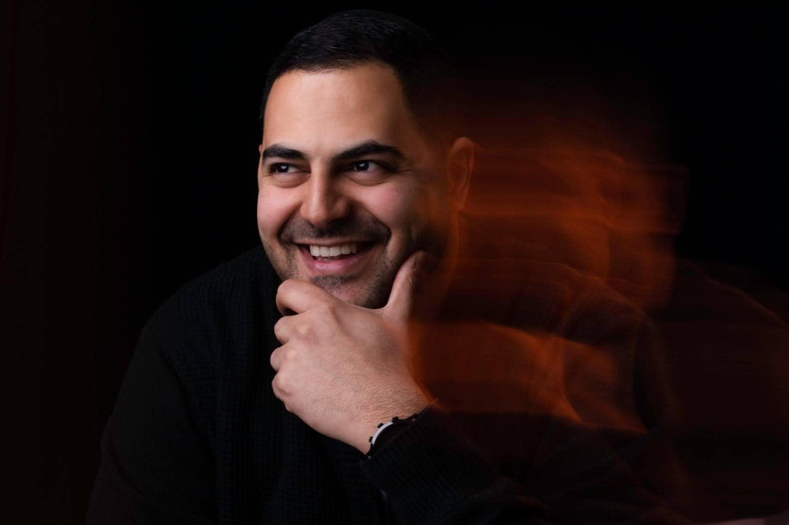
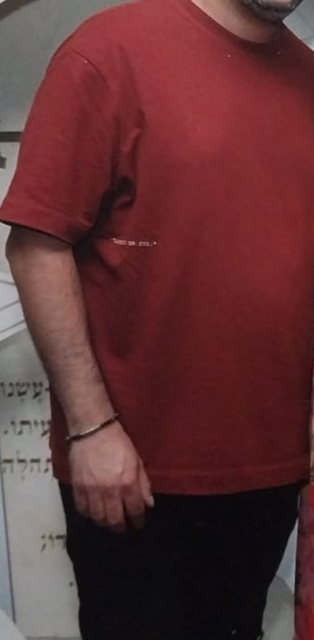
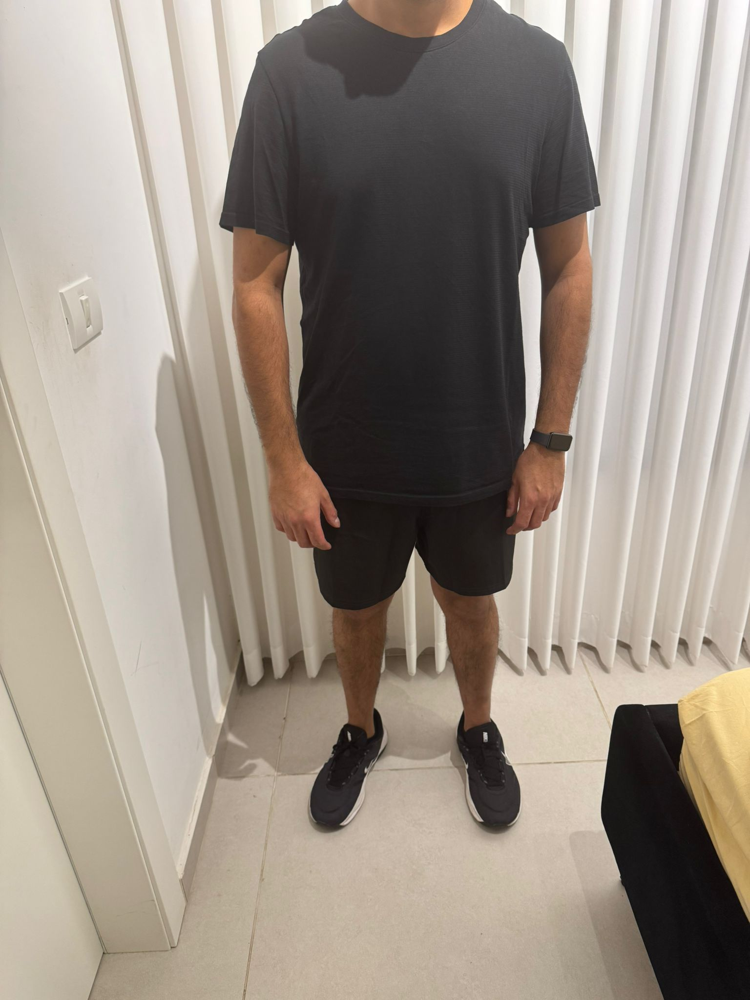
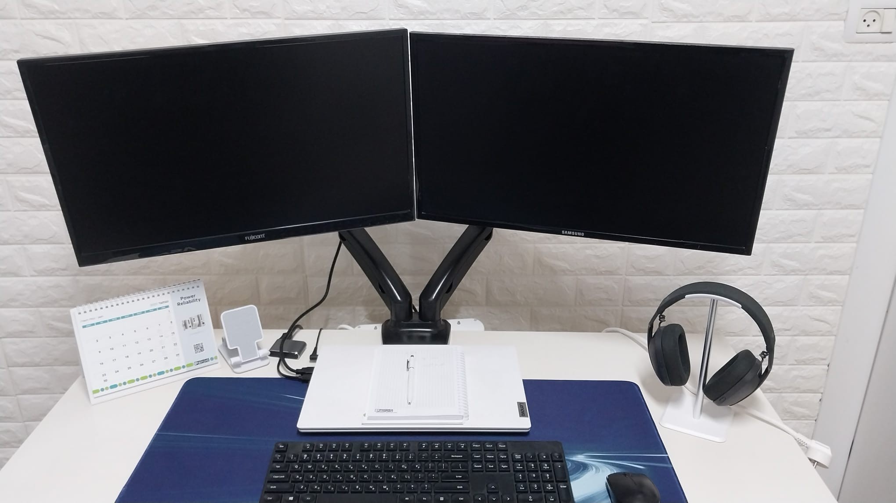

Over the years, I realized that change begins with a decision and continues with persistence. I lost 25 kg, got into shape, and found the strength to reinvent myself. Alongside adopting a healthier lifestyle, I began studying QA with the goal of building a meaningful professional future in the tech industry. The journey hasn't been easy, but with determination, self-discipline, and belief - I keep moving forward, one step at a time.



linkedin